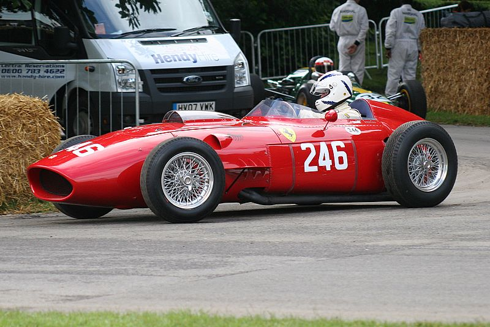

Первый V-образный шестицилиндровый двигатель был создан на фирме Ferrari под руководством Витторио Яно в 1956 году. Названный в память о сыне Энцо Феррари, он стал вехой в истории фирмы: его отменные характеристики позволили Ferrari вернутся на вершину автоспорта и заложили основу новой марки Dino.
Phone:+30674842883
Email:ferrari420@gmail.com